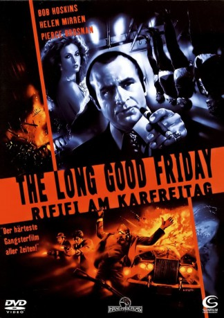

#9415 Rififi am Karfreitag
Alternativ: The Long Good Friday
 
 IMDB-Wertung: 7.7 / 10
IMDB-Wertung: 7.7 / 10  Metascore: 0
Metascore: 0 
Harold Shand, König der Londoner Unterwelt, will seine Laufbahn mit einem gigantischen Geschäft krönen, einem Olympiastadion im Gebiet der heruntergekommenen Docks des East End. Das Geschäft ist zu groß für ihn allein, deshalb ist er nach Amerika geflogen und hat mit der Mafia verhandelt. Am Karfreitag soll alles perfekt gemacht werden auf Harolds Yacht, die er stolz auf der Themse herumfahren läßt, um dem Mafia-Manager Charlie ein wenig Sightseeing zu bieten. Doch dann geschehen unerfreuliche Dinge: der Rolls Royce, der gerade Harolds Mutter zur Kirche gebracht hat, fliegt in die Luft, sein bester Freund und wichtigster Mann wird im Schwimmbad erstochen, eine Bombe zerstört das feine Restaurant, in dem man essen wollte.
Jahr: 1980
Dauer: 114 Minuten
FSK: 18
Land: England Studio: Cannon Screen EntertainmentTonspuren:
Untertitel:
Auflösung: 1080p (1920x1080) Größe: 7833 MB
Genre: Thriller, Drama, Krimi, Mystery
Regisseur: John Mackenzie
Drehbuch: Barrie Keeffe
Soundtrack: Francis Monkman
Darsteller:
 Paul Freeman als Colin
Paul Freeman als Colin Kevin McNally als Irish Youth
Kevin McNally als Irish Youth- P.H. Moriarty als Razors
- Derek Thompson als Jeff
 Bob Hoskins als Harold
Bob Hoskins als Harold Helen Mirren als Victoria
Helen Mirren als Victoria Pierce Brosnan als 1st Irishman
Pierce Brosnan als 1st Irishman- Daragh O'Malley als 2nd Irishman
- Dave King als Parky
- Brian Hall als Alan
- Alan Ford als Jack
- Eddie Constantine als Charlie
- Stephen Davies als Tony
- Bruce Alexander als Mac
- Paul Barber als Erroll
 Dexter Fletcher als Kid
Dexter Fletcher als Kid- James Ottaway als Commissionaire
 Roy Alon als Captain Death
Roy Alon als Captain Death Tony Rohr als O'Flaherty
Tony Rohr als O'Flaherty George Coulouris als Gus
George Coulouris als Gus Tony Clarkin als Driver Hitman (uncredited)
Tony Clarkin als Driver Hitman (uncredited) Harry Fielder als Policeman (uncredited)
Harry Fielder als Policeman (uncredited)- Leo Dolan als Phil
- Patti Love als Carol
- Bryan Marshall als Harris
- Ruby Head als Harold's Mother
- Charles Cork als Eric
- Olivier Pierre als Chef
- Karl Howman als David
- Dave Ould als Don
- Paul Kember als Ginger
- Bill Moody als Boston
- Alan Devlin als Priest
- Nigel Humphreys als Dave
- Brian Hayes als Pool Attendant
- Georgie Phillips als Eugene
- Mary Sheen als Lil
- Pauline Melville als Dora
- Trevor Laird als Boy Under Car
- Billy Cornelius als Peter
- Michael Ryan als Waiter - Ricardo
- Robert Walker als Jimmy
- Nick Stringer als Billy
- Gillian Taylforth als Sherry
- Robert Hamilton als Flynn
- Ralph Morse als Congregationalist (uncredited)
- Alan Talbot als Sniper (uncredited)
Datei: X:\FSK18-1900-1999\Rififi am Karfreitag (1980, FSK18, 1920x1080).mkv seit 30.08.2018
Festplatte: FSK18
 Es gibt insgesamt 108 Filme in der Gruppe 'FSK18-1900-1999'
Es gibt insgesamt 108 Filme in der Gruppe 'FSK18-1900-1999'